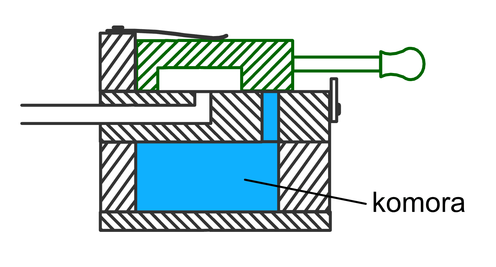
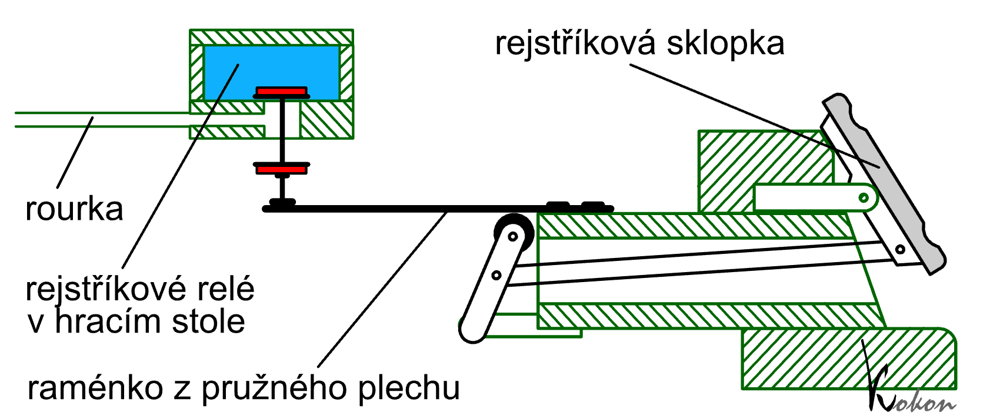
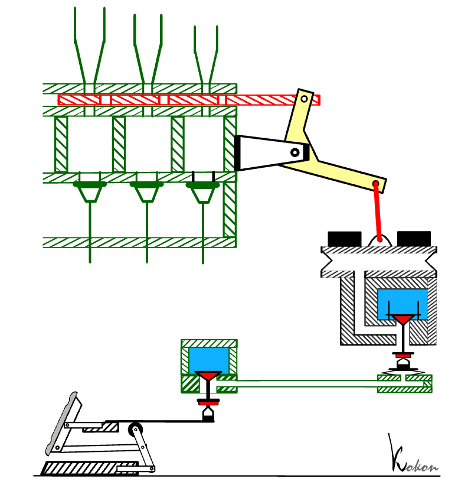
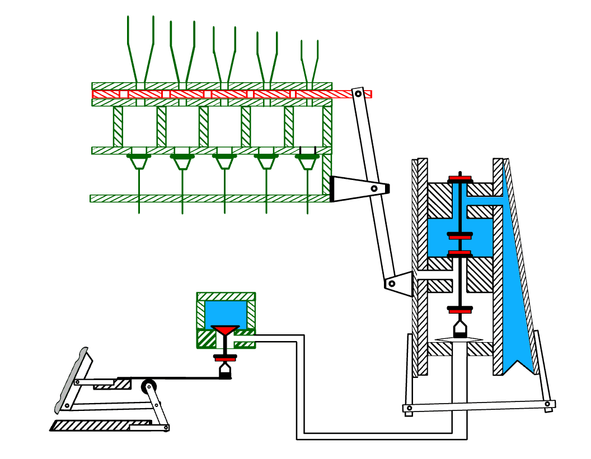

Stejně jako tónové ventily i systém registrace ve vzdušnici může být
ovládán pneumaticky. V takovém případě hovoříme o pneumatické
rejstříkové traktuře. Princip funkce obou traktur (hrací i
rejstříkové) je velmi podobný. Vzhledem k rozměrům rejstříkových ventilů
(jsou o hodně větší, než tónové) či síle, nutné k přesouvání zásuvek,
musí být všechny komponenty, bezprostředně s nimi svázané podstatně
větší a silnější. Stejně jako u hrací traktury varhaník na hracím stole
ovládá prostřednictvím sklopek či táhel jen řídicí ventil, další ovládání
se děje jen stlačeným vzduchem, vedeným opět rourkami s vloženými pomocnými
ventily a relé. Na následující ilustraci řezu varhanami s kuželkovou vzdušnicí a rejstříkovými
kancelami je rejstříková traktura zvýrazněna červenou
barvou. (Podrobnější popis jednotlivých součástí je
uveden na úvodní stránce "Pneumatická
traktura"). |
Jedním z typů řídicích ventilů
rejstříkové traktury je posuvný ventil. Stlačený vzduch ze vzduchové komůrky
u ventilu se v příslušné poloze tahélka dostane kanálkem vyfrézovaným
v bločku dále do rourky traktury a přenese tak ovládací tlakový impuls
k dalším součástem (výkonným ventilům, relé…). Bloček je ovládán varhaníkem
pomocí manubria. |
 |
| Jinou konstrukci vypínače rejstříků spojeného s ventilem traktury, tzv. sklopky ukazuje následující animace: |

Všimněme si stabilní polohy sklopky v obou pozicích
– zapnuto i vypnuto. Mechanismus se chová jako bistabilní (na rozdíl od
např. klávesy) a k ovládání potřebuje krátkého působení síly na jednu
ze stran sklopky jen při změně polohy – překlopení (sklápění, odtud „sklopka“).
Další práci, spojenou s uskutečněním zapnutí či vypnutí hlasu už převezmou
navazující části traktury. Obdobné řešení je představeno na následujících fotografiích. Je na nich zachycen mechanismus sklopek z pohledu varhaníka a zvnitřku stolu. Jsou na nich patrné dřevěné páky s připevněnými plíšky. Sklopky ovládá varhaník, páky pak přes plíšky nadzvedávají kuželky ventilků ukryté ve vzduchovém kanále. Snímek zachycuje situaci, kdy jsou všechny rejstříky vypnuté (všechny ventilky jsou v klidové –dolní poloze). |
  |
Na snímku samozřejmě není vidět vnitřek vzduchové
komory s ventilky. Z nich jsou viditelné jen spodní části kuželek s našroubovanými
oříšky (dřevěná či kožená matička, polepená zespod měkkou plstí (modrošedou),
dosedající v okamžiku zapnutí hlasu na plíšek). Následující fotografie
ukazuje polohu pák a ventilů v okamžiku zapnutí dvou hlasů: |

Překlopení sklopky způsobí přes páku a plíšek nadzvednutí příslušného
ventilu, který vpustí stlačený vzduch do odpovídající rourky. U nadzvednutého
ventilu je k otvoru ve vzduchovodu, kterým prochází drát kuželky, plíškem
přitisknuto těsnění (červené) nad oříškem a ten je tak utěsněn. V nástrojích s podélnou vzdušnicí (např. kuželkovou s rejstříkovými
kancelami) je konstrukce rejstříkové traktury prakticky shodná s trakturou
tónovou (viz obrázek řezu varhanami se zvýrazněnou trakturou na začátku
stránky). Rozdíl je až na konci traktury v konstrukci výkonného ventilu.
Ten u tohoto typu vzdušnice naplňuje stlačeným vzduchem rejstříkovou
kancelu probíhající po celé délce vzdušnice, musí tedy mít tomu odpovídající
rozměry, které jsou několikanásobně větší než rozměry tónových ventilů.
Pro otevírání větších ventilů se nejčastěji používají klínové míšky. |

Překlopení sklopky na hracím stole způsobí nadzdvižení
ventilu ve vzduchové komůrce a naplnění navazující rourky vzduchem. Na
jejím konci je malý míšek, jehož naplnění způsobí nadzdvižení a otevření
malého kuželkového ventilu, který následně vpustí tlakový vzduch do většího
míšku – akčního členu traktury. Jeho horní deska je přes úhelník spřažena
se zásuvkou, takže nadmutí míšku při naplnění vzduchem způsobí přesun
zásuvky ve vzdušnici a zapnutí hlasu. Míšek je naplněn po celou dobu,
kdy je hlas zapnutý. Pokud varhaník překlopí sklopku zpátky (vypne rejstřík), poklesnou oba ventily a míšek splaskne. Jeho víko, zatížené pomocným závažím poklesne a přes úhelník přesune zásuvku do polohy, při které je hlas vypnutý. Na animaci pro názornost nejsou zachovány proporce jednotlivých komponentů, rozměry akčního míšku mohou být podstatně větší v závislosti na síle nutné k pohybu zásuvky. Jinou možností řešení mechanismu zásuvky je použití dvojice spřažených, svisle umístěných klínových míšků (na ilustraci pro názornost opět bez zachování měřítek). |
|
Samotný mechanismus je tvořen dvěmi naplňovanými (tlakovými)
míšky, jejichž pohyblivé desky jsou navzájem spřaženy táhlem. Jeden z
míšků je navíc pomocí dvouramenné páky spojen se zásuvkou. Míšky jsou
naplňovány stlačeným vzduchem ze vzduchové komory přes dvojčinný ventil
střídavě – vždy, když je jeden naplněn, druhý se vyprázdní. Ventil je
ovládán pomocí relé, tvořeného malým míškem pod ventilem, který je naplňován
rourkou od hracího stolu (řídicí mechanismus je shodný, jako v předchozích
případech). |
 |
Obrázek představuje mechanismus v klidovém stavu.
Rourka od hracího stolu je prázdná a ventily ve spodní poloze vpouštějí
vzduch do pravého míšku současně s otevřením výpustného otvoru levého
míšku, takže vzduch z něj může volně uniknout do okolí. Zásuvka je zasunuta
do vzdušnice a hlas je vypnutý. |
 |
Naplnění rourky vzduchem (zapnutím ovládacího prvku na hracím stole) nadme míšek pod kuželkou ventilu a nadzvedne ji. Zastaví se tím přívod vzduchu do pravého míšku a současně otevře přívod do levého. U pravého míšku se navíc otevře výpustný otvor, kterým se míšek vyfoukne. Nadmutý levý míšek přes páku vytáhne zásuvku ze vzdušnice a zapne hlas. V tomto stavu míšky setrvají po celou dobu, po kterou je rourka od hracího stolu pod tlakem (sklopka či tahélko na hracím stole je v poloze zapnuto). Činnost celého mechanismu traktury (zpomaleně) přibližuje následující animace: |

Na souvisejících stránkách jsou popsány nejčastěji
používané komponenty pneumatické
traktury, tónová traktura,
traktura spojek a
pneumatická pomocná zařízení v kapitolách o crescendu
a kolektivech a volných kombinacích.. |
Poznámka: Tato stránka je součástí Anatomie varhan ®, © Ing. Petr Bernat. Všechny animace © Konrad Zacharski